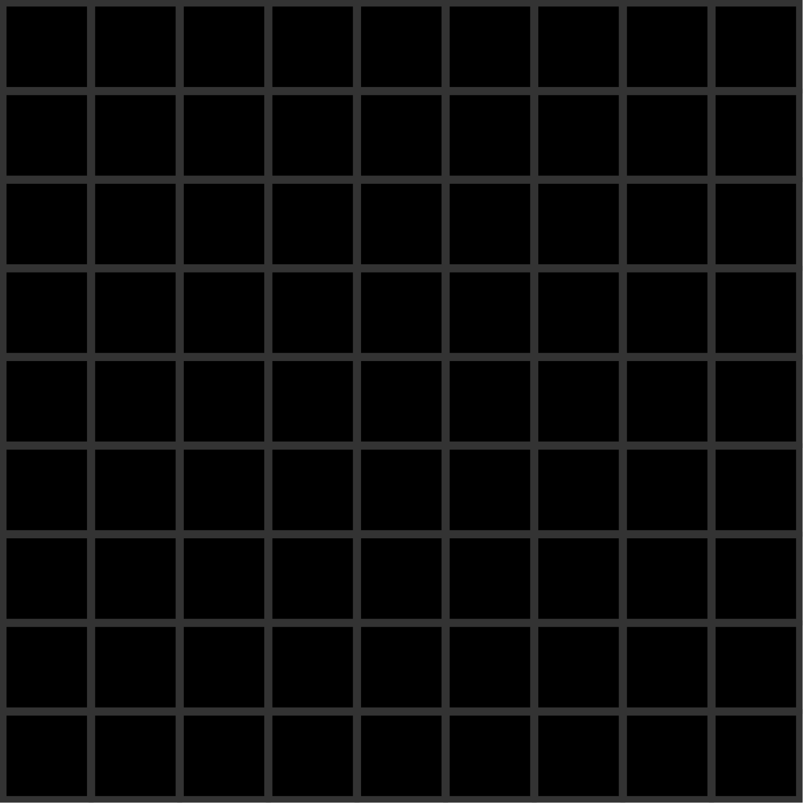
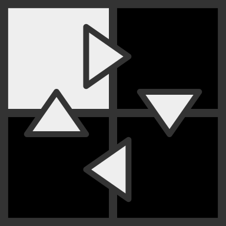
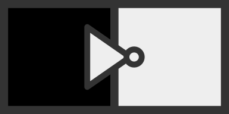

Welcome To Orcells, The simple but complicated, Turing complete digital logic simulator!
You start with a blank grid called a board, which is made
from squares called cells.
It looks
like this:

To move around a board, hold either or
, then click and drag. Scroll to zoom.
Type 1 Cells have one property which is called its bit, which can be on (cell is white) or off (cell is black):

To set the bit of a cell to on, hover over it and press: . To
set the bit to off press:
.
This is called forcing. When
forcing a
cell, its bit will always stay in the state you force it while that key is held down.
Note that most actions will continue happening when the button is held down and then you move the cursor
around.
There is no need to let go and
press again between cells when forcing or connecting/disconnecting so you can drag.
To create a
buffer, which is a type of logic connection, hold left click and drag over the grid line between two cells in
the direction you want to make the connection.
buffers look like this:
Xonnections are used to link cells together to make them interact with each other.
Connections send an output
which is on or off
to the
cell it's pointing to, based on the state of the cell it points from as the input.
In the case of buffers, this output will match the bit of the input cell
Meaning buffers essentially link
cells in a chain that signals can travel along.
Every tick, all cells that have inputs, will have the bit on if any of those inputs are on, otherwise if all
inputs
are off, it will be off.
Here is an example of cells connected in a loop with a signal going around the loop:

If a cell has no inputs, then it is static and it will not change unless you act on it.
To create a not, which is another type of logic connection, do the same thing you do to create a buffer but instead of left click dragging, right click drag.
Nots will output the opposite to the bit of the input cell, they act as the opposite to buffers.
When the input is on, the output will be off, and when the input is off the output will be on.
Nots look like this:

To Pause/Play the simulation, press: , or press the button that looks like one of these:
(Work in progress, tutorial will be finished soon. For now, just try to work it out or join the discord for help)